원격 방수총 CROW - 40/65
고위험 화재 현장을 위한 원거리 무선 방수 솔루션
우리의 스마트 원격 방수총은 반복적이고 위험한 방수 작업을
무선 원격 조작으로 제어할 수 있도록 설계된 전동식 방수 장비입니다.

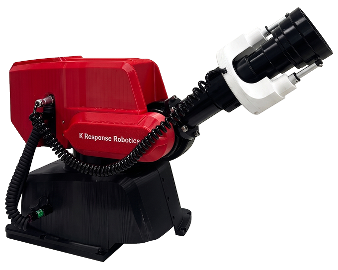
CROW-40
고위험 화재 현장을 위한 원거리 무선 스마트 방수 솔루션
접합부 직경 40mm / 최대 방수량 1,000LPM

| 모델명 | CROW-40 - 원격방수총 | |
|---|---|---|
| 접합부 직경(mm) | 40 | |
| 적정 방수압력(MPa) | 0.7 | |
| 최대 방수압력(MPa) | 1.5 | |
| 최대 방수량(LPM) | 1,000 | |
| 무게(kg) | 21 | |
| 가동 범위 |
상하(TILT)90° (0° ~ 90°)
|
|
|
좌우(PAN)340° (-170° ~ 170°)
|
||
| 리모컨 배터리 사양 | Samsung SDI 18650(3,500mAh, 충전식) 또는 동일 규격 제품 호환 | |
| 사이즈(mm) | 300×240×300 | |
| 재질 | AA6061 |
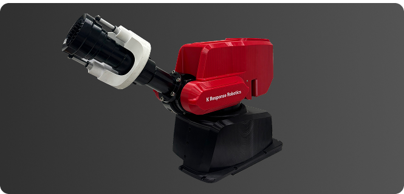
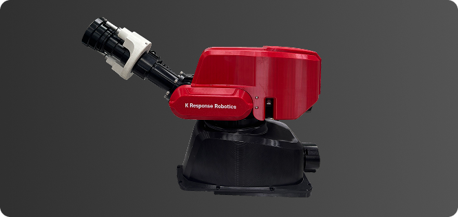
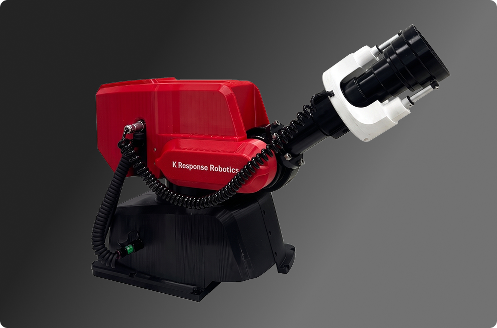
원격 방수총에 적용된 저반동 관창 기술
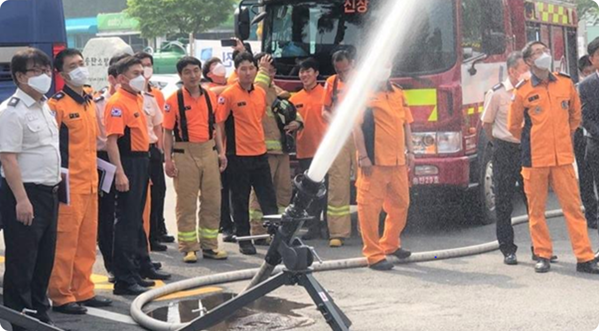
화재진압 시 관창의 반발력 위험성(사망/부상), 장기 방수 시 소방관은 피로도 증가
안전하고 피로도가 적은 저반동 방수총 기술 확보
1인 방수 또는
무인 고정 방수 가능
4명의 소방관이 2개의 관창으로 방수하는 방수량을
1명의 소방관이 1대의 방수총으로 방수할 수 있음
방수압력 : 약 9 kgf/cm²
방수각도 : 약 70°
최대도달높이 : 9kgf/cm² 일 때 약 28m
미국 TFT 노즐 대비 반동력이 작음 → 소방관 안전 확보가 가능
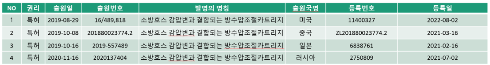

원격 방수 사족 보행 로봇
재난 환경을 인식하고 대응하는 지능형 스마트 사족보행 로봇
우리의 4족 보행 로봇은 불규칙 지형과 위험 요소를 스스로 판단해
탐지·이동·대응까지 수행하는 지능형 사족 보행 로봇입니다.
안정적인 이동 가능
뛰어난 기동성
- 자동 인식 및 탐지
- 지도 생성 및 분석
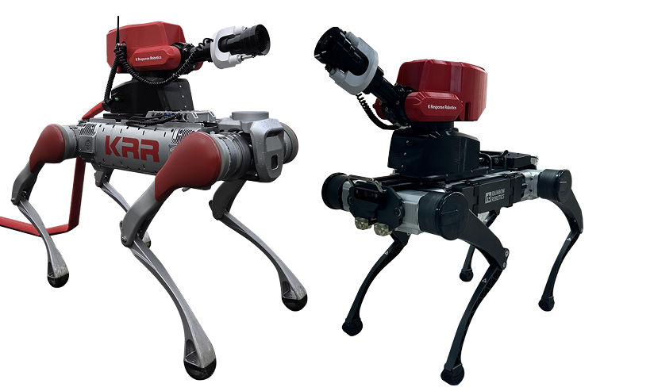


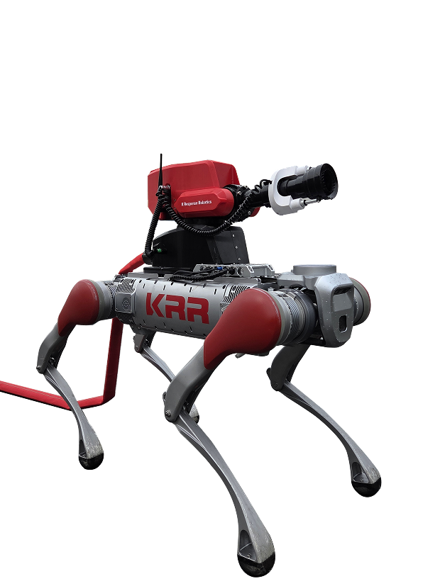
Unitree B2 · CROW - 40
고강도 재난 현장을 위한 원격 사족보행 로봇
최대 탑재 하중 100kg / 운용 시간 4시간
| 모델명 | Unitree B2 - CROW 40 / CROW 65 | |
|---|---|---|
| 접합부 직경(mm) | 40 | |
| 적정 방수압력(MPa) | 0.7 | |
| 최대 방수압력(MPa) | 1.5 | |
| 최대 방수량(LPM) | 1,000 | |
| 무게(kg) | 60 + 21 | |
| 가동 범위 |
상하(TILT)90° (0° ~ 90°)
|
|
|
좌우(PAN)340° (-170° ~ 170°)
|
||
| 운용시간 | 4시간 | |
| 원격 운용 거리(m) | 100 | |
| 이동 속도(m/min) | 20 | |
| 방수 방진 | IP66 |
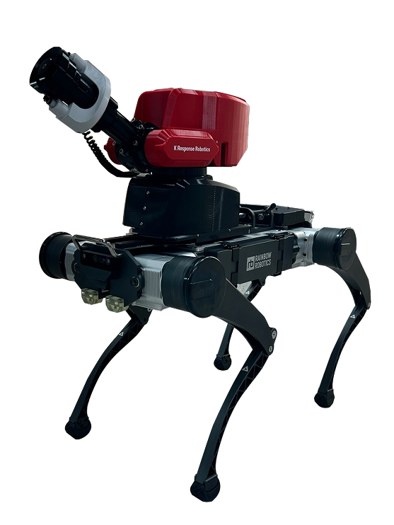
RBQ10 · CROW - 40
경량 고기동 사족보행 로봇
다리 관절 12개 / 운용 시간 3시간
| 모델명 | RBQ10 - 원격 방수 사족 보행 로봇 | |
|---|---|---|
| 접합부 직경(mm) | 40 | |
| 적정 방수압력(MPa) | 0.7 | |
| 최대 방수압력(MPa) | 1.6 | |
| 최대 방수량(LPM) | 1,000 | |
| 무게(kg) | 37 + 21 | |
| 가동 범위 |
상하(TILT)90° (0° ~ 90°)
|
|
|
좌우(PAN)340° (-170° ~ 170°)
|
||
| 운용시간 | 3시간 | |
| 단차 보행 능력(cm) | 12 | |
| 이동 속도(km/h) | 4 |
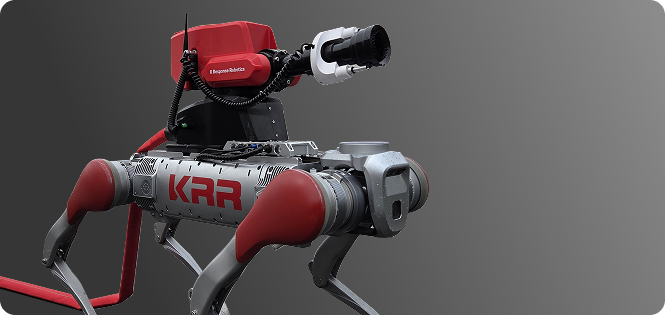
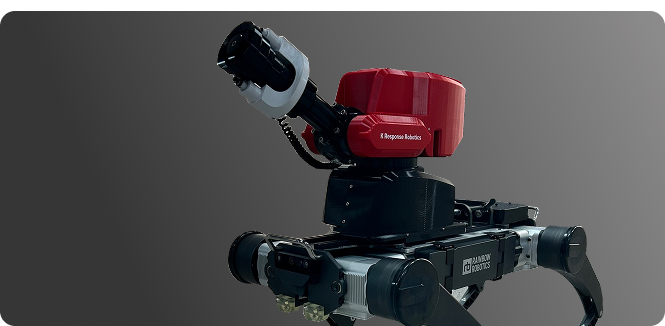
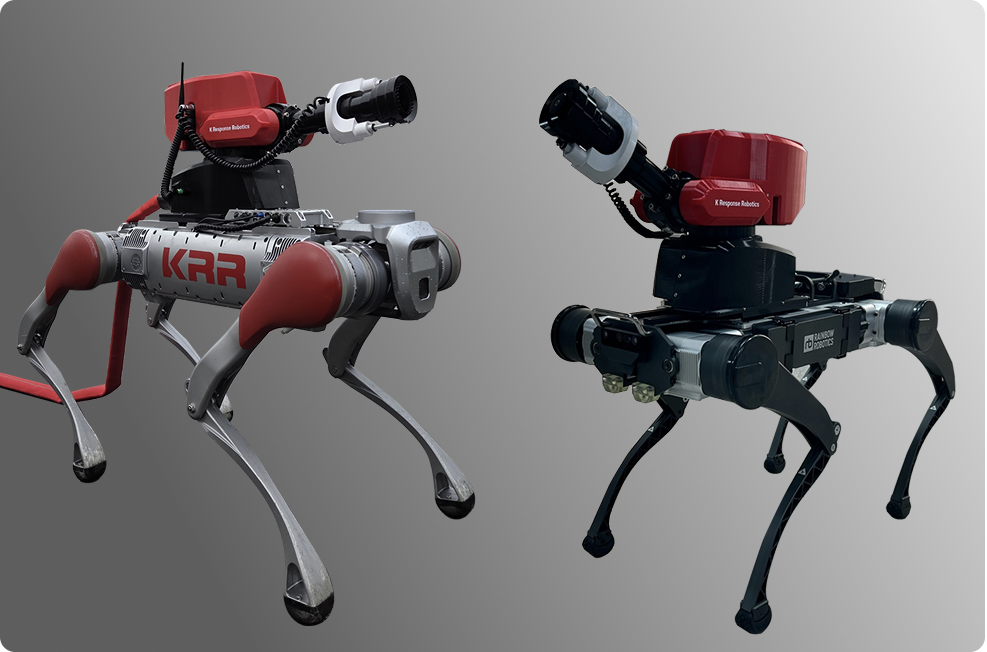

SLAM 결과물 TopView 지도

3D SLAM 지도 작성 결과
사족보행 로봇 화재 대응 시연
원격 방수 사족보행 로봇 시연
협소 공간 탐지 로봇
협소공간 주행·탐지를 위한 지능형 대응 로봇
협소한 환경에서 안정적인 주행과 정밀한 탐지가 가능하며, 자율주행 기능과 원격통신 기능,
위험물 탐지기능을 활용하여 안전 점검 분야에서 다양하게 활용할 수 있습니다.
단차 7cm 장애물 극복 가능 주행
센서 유닛 탑재
자율 주행 센서 탑재
지도 생성 및 분석

| 모델명 | 협소 공간 탐지 로봇 | |
|---|---|---|
| 무게(kg) | 5kg | |
| 속도 | 0.3m/s이상 | |
| 운용 방법 | 무선 전원/ 통신 | |
| 연속운용거리 | 300m 이상 | |
| 접근 가능 구간 폭 | 폭 15cm 이내 | |
| 장애물 극복 가능 단차 | 단차 7cm 이상 | |
| 주요 기능 | 무선 통신을 활용한 원격 조종 | |
| 카메라, 조명, 자율주행 센서 탑재 | ||
| 환경 지도 생성 및 자율주행 | ||
| 사용자 편의성 향상 기술 | 탐색 환경 지도 생성 | |
| 위험물 탐색 정보 제공 | ||
| 영상 기반 위험물 탐지/인식/분류 기술 |


현장 지도 생성

천장 내부 협소 공간 자동 탐색

위험물 탐지/인식/분류

실증 환경 내 CCTV 및 영상 흔들림 보정
고소 방수 드론
고층 화재 진압을 위한 고소 방수 드론 기술
우리의 고소 방수 드론은 고층 건물 화재 및 접근이 어려운 지역에서 빠르고 효과적으로 소화수
혹은 CAFS (Compressed Air Foam System)를 분사하여 화재를 진압할 수 있는 최첨단 소방 드론입니다.
고성능 소화 시스템 - 최대 100kg 탑재,
CAFS(압축공기포) 기반
효율적 화재 진압
고정밀 호버링 안정성 확보
통신 및 방수 시스템 - 실시간 통신 +
온보드 컴퓨팅 +
휴대형 조종 솔루션
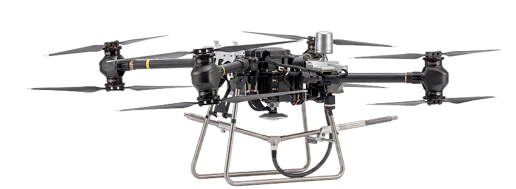

| 모델명 | 고소 방수 드론 | |
|---|---|---|
| 최대 방수 높이 | 100m | |
| 주요 기능 | 3.0 MPa 이상 압력에서도 안전적인 호버링을 유지 |
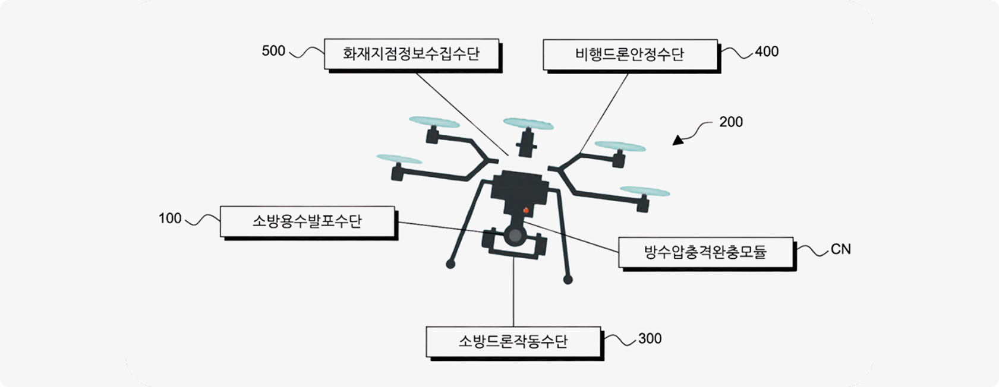
소방드론 개념도
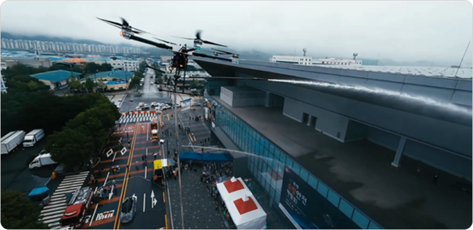
고층 화재 진압을 위해 방수 드론 시연(국제소방박람회)
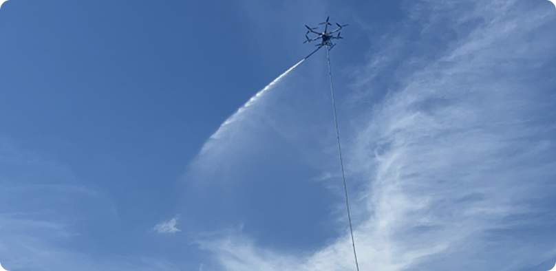
소방 드론 시연
고층 화재 진압을 위해 방수 드론 시연(국제소방박람회)
소방 드론 시연